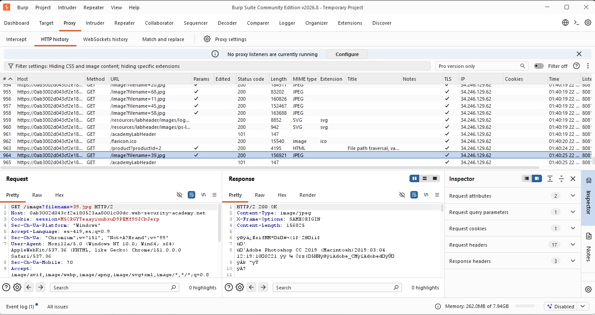
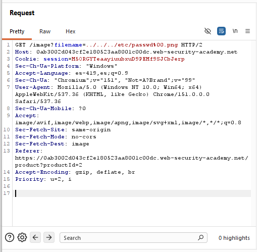
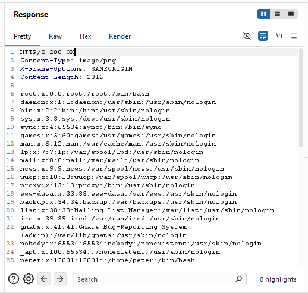
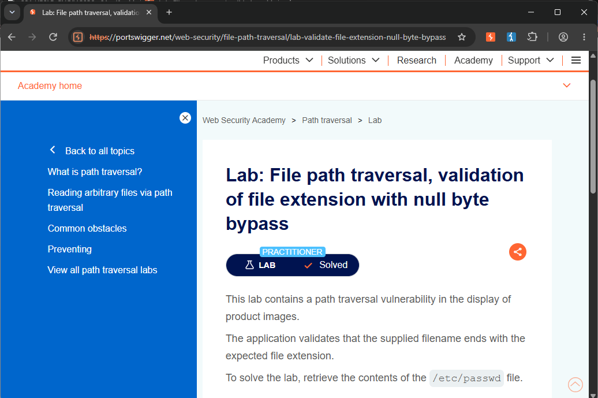

/// LAB_12_VALIDATION_OF_FILE_EXTENSION
> CNO_IV // PORTSWIGGER // VALIDATION_OF_FILE_EXTENSION... [NULL_BYTE_BYPASS]
Actividad 12 — Validation Of File Extension With Null Byte Bypass
File path traversal, validation of file extension with null byte bypass
Laboratorio práctico de PortSwigger Web Security Academy enfocado en la identificación y explotación de una vulnerabilidad de File Path Traversal mediante el bypass de una validación de extensión utilizando un byte nulo codificado.
El laboratorio permite analizar cómo una aplicación puede validar que el nombre de un archivo termine con una extensión permitida, pero procesar posteriormente el byte nulo de manera que sea posible acceder a un archivo diferente al esperado.
Nivel
Practitioner
El laboratorio corresponde al nivel Practitioner de PortSwigger Web Security Academy.
Tipo de explotación
File Path Traversal — Validation Of File Extension With Null Byte Bypass
Explotación de una vulnerabilidad de File Path Traversal mediante el bypass de una validación de extensión utilizando un byte nulo codificado antes de una extensión válida.
Objetivo
El objetivo del laboratorio es identificar y explotar una vulnerabilidad de File Path Traversal presente en la funcionalidad encargada de mostrar las imágenes de los productos.
La aplicación valida que el nombre del archivo proporcionado mediante el parámetro filename termine con una extensión de imagen válida.
Extensión esperada
.png
La finalidad específica consiste en evadir esta validación mediante un byte nulo codificado y acceder al contenido del archivo:
Archivo objetivo
/etc/passwd
Explicación técnica de la vulnerabilidad
La vulnerabilidad de File Path Traversal ocurre cuando una aplicación permite que datos controlados por el usuario influyan directamente en la ubicación de un archivo que será procesado o recuperado por el servidor.
En este laboratorio, la aplicación utiliza el endpoint /image para recuperar las imágenes asociadas a los productos. El archivo solicitado se determina mediante el parámetro filename.
La solicitud original identificada fue:
GET /image?filename=39.jpg HTTP/2
La aplicación implementa una validación que comprueba que el nombre del archivo proporcionado termine con una extensión de imagen válida.
El problema consiste en que la validación de la extensión y el procesamiento posterior de la ruta no manejan de forma segura el byte nulo.
El payload utilizado fue:
../../../etc/passwd%00.png
La secuencia ../../../ permite realizar un recorrido hacia directorios superiores hasta alcanzar la ubicación del archivo /etc/passwd.
Posteriormente, la secuencia %00 representa un byte nulo codificado. Este elemento permite colocar una extensión válida después de la ruta del archivo objetivo.
La extensión .png permite que el valor proporcionado cumpla con la validación implementada por la aplicación.
En determinados mecanismos de procesamiento de archivos, el byte nulo puede actuar como terminador de una cadena. Esto puede provocar una diferencia entre la representación utilizada durante la validación y la forma en que posteriormente se procesa la ruta.
De esta manera, la aplicación puede aceptar el valor debido a que termina en .png, mientras que el procesamiento posterior permite acceder al archivo /etc/passwd.
Esto demuestra que validar únicamente la extensión de un archivo no es suficiente para proteger una aplicación contra vulnerabilidades de Path Traversal.
Procedimiento
01 // Objetivo del procedimiento
El objetivo consiste en identificar el parámetro utilizado por la aplicación para recuperar las imágenes y comprobar si puede ser manipulado para evadir la validación de extensión mediante un byte nulo codificado.
02 // Contexto técnico
La aplicación utiliza el endpoint /image para recuperar las imágenes asociadas a los productos.
La solicitud utiliza el parámetro filename para indicar el recurso que debe ser recuperado por el servidor.
La solicitud original identificada fue:
GET /image?filename=39.jpg HTTP/2
El valor proporcionado corresponde inicialmente al nombre de una imagen válida y contiene la extensión .jpg.
03 // Secuencia de ejecución
- Se accedió al laboratorio correspondiente de PortSwigger Web Security Academy.
- Se ingresó a una página de producto para identificar la solicitud utilizada para recuperar su imagen.
- Mediante Burp Suite, específicamente en Proxy → HTTP history, se identificó la solicitud correspondiente a la imagen.
- Se identificó el endpoint /image y el parámetro filename.
- Se observó que la solicitud original utilizaba el nombre de archivo: 39.jpg.
- La solicitud fue enviada a Burp Suite Repeater para poder modificar manualmente el parámetro.
- Se sustituyó el valor original del parámetro filename por: ../../../etc/passwd%00.png
- La solicitud modificada quedó de la siguiente manera: GET /image?filename=../../../etc/passwd%00.png HTTP/2
- El payload incorporó las secuencias de Path Traversal para acceder al archivo objetivo.
- Se agregó el byte nulo codificado %00 seguido de la extensión .png para evadir la validación.
- Se envió la solicitud modificada desde Burp Suite Repeater mediante la opción Send.
- Se analizó la respuesta HTTP obtenida.
- La respuesta devolvió el contenido del archivo /etc/passwd.
- Finalmente, se regresó al laboratorio en Web Security Academy y se verificó que apareciera Lab Solved.
04 // Solicitud HTTP original
Mediante Burp Suite se identificó en Proxy → HTTP history la solicitud correspondiente a la imagen del producto.
La solicitud observada fue:
GET /image?filename=39.jpg HTTP/2

La solicitud utiliza el parámetro filename, cuyo valor corresponde al archivo 39.jpg. Este parámetro constituye el punto de entrada analizado para comprobar la existencia de una vulnerabilidad de Path Traversal.
05 // Payload utilizado
La solicitud fue enviada a Burp Suite Repeater para modificar manualmente el valor del parámetro filename.
El valor original:
filename=39.jpg
fue sustituido por:
filename=../../../etc/passwd%00.png
La solicitud resultante fue:
GET /image?filename=../../../etc/passwd%00.png HTTP/2
El payload combina una secuencia de Path Traversal, el archivo objetivo, un byte nulo codificado y una extensión válida.

La modificación permite que el valor proporcionado conserve una extensión válida para superar la comprobación implementada por la aplicación.
06 // Explicación del payload
El payload utilizado fue:
../../../etc/passwd%00.png
El payload puede dividirse en tres elementos principales:
../../../
Estas secuencias representan movimientos hacia directorios superiores. Permiten salir del directorio destinado a las imágenes y avanzar hacia una ubicación diferente dentro del sistema de archivos.
/etc/passwd
Corresponde al archivo que se intenta recuperar mediante la ruta manipulada. Este archivo contiene información de las cuentas de usuario del sistema Linux.
%00
La secuencia %00 representa un byte nulo codificado.
En este laboratorio, el byte nulo permite separar la ruta del archivo objetivo de la extensión que se agrega posteriormente. Esto resulta importante debido a que la aplicación valida que el nombre del archivo termine con una extensión permitida.
.png
Finalmente se agrega la extensión .png, permitiendo que el valor enviado cumpla con la condición de validación establecida por la aplicación.
El proceso puede representarse conceptualmente de la siguiente manera:
../../../
+
/etc/passwd
+
%00.png
=
../../../etc/passwd%00.png
La vulnerabilidad ocurre porque la aplicación realiza la validación sobre una representación de la entrada que no coincide correctamente con la forma en que posteriormente se procesa la ruta.
Como resultado, la validación acepta el valor debido a la presencia de .png, mientras que el procesamiento permite acceder al archivo /etc/passwd.
Por lo tanto, el payload consigue superar la validación de extensión y recuperar un archivo ubicado fuera del directorio destinado originalmente a las imágenes.
07 // Respuesta vulnerable
Después de enviar la solicitud modificada mediante Burp Suite Repeater, el servidor respondió:
HTTP/2 200 OK
La respuesta también indicó:
Content-Type: image/png
Content-Length: 2316
Aunque la respuesta indica un tipo de contenido image/png, el cuerpo contiene el contenido del archivo /etc/passwd.
Entre las entradas observadas se encontró:
root:x:0:0:root:/root:/bin/bash

El contenido obtenido confirma que el servidor procesó la ruta manipulada y devolvió el recurso solicitado.
La presencia de la entrada root:x:0:0:root:/root:/bin/bash confirma que fue posible recuperar el contenido de /etc/passwd.
08 // Confirmación de Lab Solved
Después de comprobar la respuesta vulnerable, se regresó al laboratorio de PortSwigger Web Security Academy.
La plataforma mostró la confirmación: Lab Solved.

Se muestra la confirmación proporcionada por PortSwigger Web Security Academy después de ejecutar correctamente la explotación. El estado Lab Solved confirma que el acceso al archivo /etc/passwd fue reconocido por la plataforma y que el objetivo establecido para el laboratorio fue alcanzado.
09 // Mitigación recomendada
Para prevenir este tipo de vulnerabilidad, la aplicación debe evitar confiar directamente en nombres o rutas proporcionados por el usuario y debe validar correctamente la ubicación final del archivo solicitado.
Cuando sea necesario trabajar con rutas proporcionadas por el cliente, estas deben normalizarse y decodificarse antes de realizar las comprobaciones de seguridad. La validación debe considerar correctamente representaciones codificadas como %00.
Se recomienda rechazar bytes nulos y caracteres de control que puedan modificar la interpretación de una ruta durante su procesamiento.
También es recomendable utilizar identificadores internos o una lista controlada de nombres de archivos en lugar de aceptar directamente rutas proporcionadas por el cliente.
Cuando sea necesario trabajar con rutas, el servidor debe comprobar que el resultado final y normalizado permanezca dentro del directorio autorizado. La validación de la extensión debe considerarse únicamente como una medida complementaria y no como el mecanismo principal de protección.
También debe utilizarse el principio de mínimo privilegio para limitar el impacto en caso de que una vulnerabilidad de acceso a archivos sea explotada.
Conclusión
El laboratorio permitió comprobar de manera práctica cómo una vulnerabilidad de File Path Traversal puede combinarse con una validación insegura de la extensión de los archivos.
La aplicación verificaba que el nombre proporcionado terminara con una extensión válida, pero esta validación podía ser evadida mediante el uso de un byte nulo codificado.
El payload utilizado fue:
../../../etc/passwd%00.png
Mediante las secuencias ../ fue posible realizar el recorrido hacia directorios superiores hasta llegar al archivo /etc/passwd. Posteriormente, %00 permitió colocar la extensión .png después de la ruta del archivo objetivo, logrando que la entrada cumpliera con la validación implementada por la aplicación.
La respuesta obtenida fue HTTP/2 200 OK y, aunque el servidor indicó un Content-Type: image/png, el cuerpo de la respuesta contenía el contenido real de /etc/passwd. Esto confirmó que la validación había sido evadida correctamente.
Finalmente, la plataforma PortSwigger Web Security Academy confirmó la resolución del laboratorio mediante el indicador Lab Solved.
Este ejercicio demuestra que las validaciones basadas únicamente en extensiones son insuficientes para proteger una aplicación contra ataques de Path Traversal. Una implementación segura debe normalizar y validar la ruta completa, controlar adecuadamente caracteres especiales y garantizar que el recurso solicitado permanezca dentro del directorio autorizado.
Documento de la actividad
Consulta el documento completo de la Actividad 12, correspondiente al laboratorio File path traversal, validation of file extension with null byte bypass , donde se presenta la documentación técnica y las evidencias del procedimiento realizado.
Ver documento PDFRoad to Hall of Fame
Regresa al recorrido principal para consultar los demás laboratorios del módulo.
Volver al Road to Hall of Fame